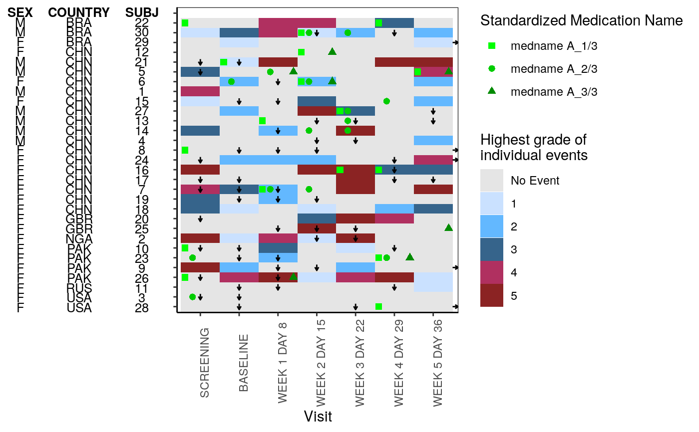
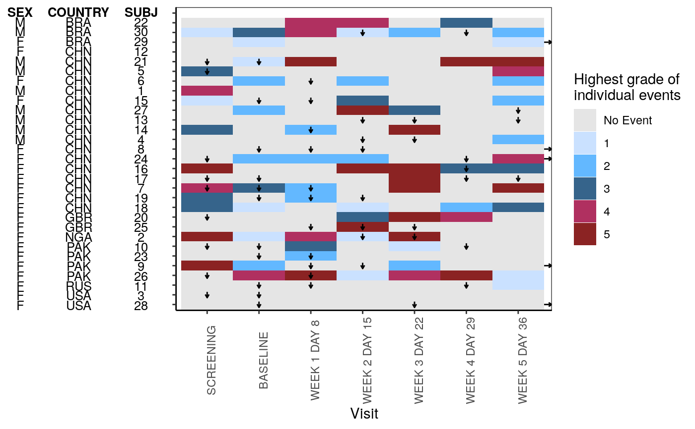

g_heat_bygrade.RdThis function plots heatmap
g_heat_bygrade( id_var, exp_data, visit_var, ongo_var, anno_data, anno_var, heat_data, heat_color_var, heat_color_opt = NULL, conmed_data = NULL, conmed_var = NULL, conmed_color_opt = NULL, xlab = "Visit", title = NULL )
| id_var | (`character`) |
|---|---|
| exp_data | (`data.frame`) |
| visit_var | (`character`) |
| ongo_var | (`character`) |
| anno_data | (`data.frame`) |
| anno_var | (`character`) a vector of columns name(s) to include for the annotation |
| heat_data | (`data.frame`) |
| heat_color_var | (`character`) |
| heat_color_opt | optional, (`character`) |
| conmed_data | optional, (`data.frame`) |
| conmed_var | optional, (`character`) |
| conmed_color_opt | optional, (`character`) |
| xlab | optional, (`character`) |
| title | (`character`) |
library(random.cdisc.data) ADSL <- radsl(N = 30) ADEX <- radex(ADSL) ADAE <- radae(ADSL) ADCM <- radcm(ADSL) # function to derive AVISIT from ADEX add_visit <- function(data_need_visit){ visit_dates <- ADEX %>% filter(PARAMCD == "DOSE") %>% distinct(USUBJID, AVISIT, ASTDTM) %>% group_by(USUBJID) %>% arrange(ASTDTM) %>% mutate(next_vis = lead(ASTDTM), is_last = ifelse(is.na(next_vis), TRUE, FALSE)) %>% rename(this_vis = ASTDTM) data_visit <- data_need_visit %>% select(USUBJID, ASTDTM) %>% left_join(visit_dates, by = "USUBJID") %>% filter(ASTDTM > this_vis & (ASTDTM < next_vis | is_last == TRUE)) %>% left_join(data_need_visit) return(data_visit) } # add AVISIT in ADAE and ADCM ADAE <- add_visit(ADAE)#>ADCM <- add_visit(ADCM)#>exp_data <- ADEX %>% filter(PARCAT1 == "INDIVIDUAL") %>% group_by(USUBJID) %>% # create a shorter subject identifier mutate(SUBJ = utils::tail(strsplit(USUBJID, "-")[[1]], n = 1)) %>% mutate(ongo_var = (EOSSTT == "ONGOING")) %>% ungroup() anno_data <- ADSL %>% select(SEX, COUNTRY, USUBJID) %>% group_by(USUBJID) %>% mutate(SUBJ = utils::tail(strsplit(USUBJID, "-")[[1]], n = 1)) %>% ungroup() %>% select(-USUBJID) heat_data <- ADAE %>% select(USUBJID, AVISIT, AETOXGR) %>% group_by(USUBJID) %>% mutate(SUBJ = utils::tail(strsplit(USUBJID, "-")[[1]], n = 1)) %>% ungroup() %>% select(-USUBJID) heat_color_opt <- c( "No Event" = "gray90", "1" = "lightsteelblue1", "2" = "steelblue1", "3" = "steelblue4", "4" = "maroon", "5" = "brown4" ) ADCM_lab <- rtables::var_labels(ADCM) ADCM <- ADCM %>% filter( CMDECOD == "medname A_1/3" | CMDECOD == "medname A_2/3" | CMDECOD == "medname A_3/3" ) %>% mutate(CMDECOD = factor(CMDECOD, levels = unique(CMDECOD))) rtables::var_labels(ADCM) <- ADCM_lab conmed_data <- ADCM %>% group_by(USUBJID) %>% mutate(SUBJ = utils::tail(strsplit(USUBJID, "-")[[1]], n = 1)) # example plotting conmed g_heat_bygrade( id_var = "SUBJ", exp_data, visit_var = "AVISIT", ongo_var = "ongo_var", anno_data, anno_var = c("SEX", "COUNTRY"), heat_data, heat_color_var = "AETOXGR", heat_color_opt, conmed_data, conmed_var = "CMDECOD", conmed_color_opt = c("green", "green3", "green4") )# example not plotting conmed g_heat_bygrade( id_var = "SUBJ", exp_data, visit_var = "AVISIT", ongo_var = "ongo_var", anno_data, anno_var = c("SEX", "COUNTRY"), heat_data, heat_color_var = "AETOXGR", heat_color_opt )